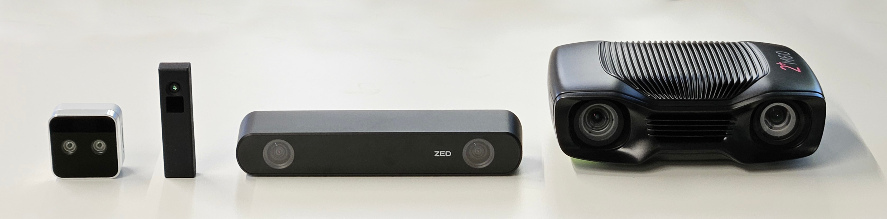
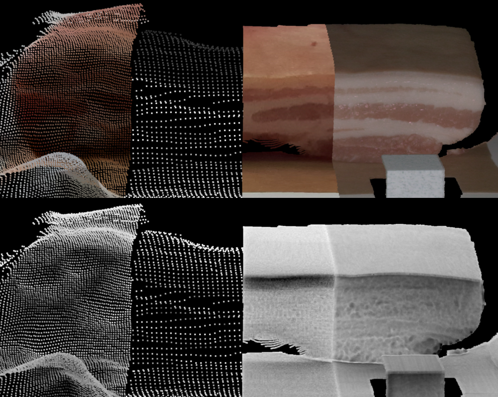
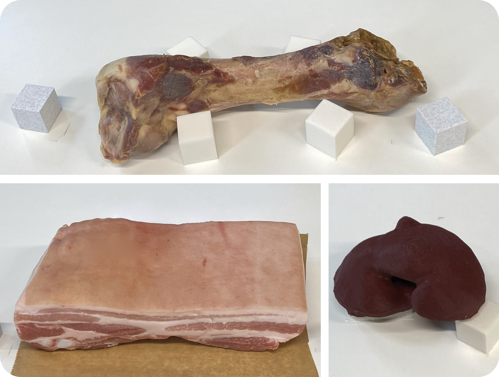

Comparing Commercial Depth Sensor Accuracy for Medical Applications
Friedrich-Alexander-Universität Erlangen-Nürnberg
CURAC 2026

Abstract
Depth estimation has numerous medical and surgical applications. We benchmark four depth sensors on a porcine bone specimen, a porcine belly specimen, and a silicone kidney phantom using stylus-sampled references. These objects contain several real-world challenges, including homogeneous surfaces, specular surfaces, and subsurface scattering. The comparison includes stereo, structured-light, and time-of-flight sensors at a distance of approximately 50 cm. The Zivid 2M+ 60 performed best across all objects and metrics considered in this work. The ZED ranked second for real tissue, but last on the phantom.

Results
Zivid achieved the lowest mean error on every object. ZED was similarly accurate on bone and porcine belly, but its error increased on the dark, homogeneous phantom. Moving the D405 from 50 cm to 33 cm reduced its porcine-belly error from 5.45 mm to 3.28 mm.
| Sensor | Bone | Porcine belly | Phantom |
|---|---|---|---|
| RealSense D405 | 7.11 | 5.45 | 4.45 |
| PMD Flexx2 | 6.97 | 6.98 | 4.68 |
| Stereolabs ZED 2i | 1.58 | 1.60 | 5.99 |
| Zivid 2M+ 60 | 1.20 | 1.42 | 2.21 |
Setup
We evaluate four sensing principles on a porcine bone specimen, a porcine belly specimen, and a silicone phantom. Reference geometry is acquired with an OptiTrack-tracked stylus. Each sensor captures three point clouds per object, which are registered to the reference using calibration cubes and rigid coherent point drift.

Data
The evaluation data contains the stylus-sampled reference point clouds and three aligned captures per camera and object. It covers the bone, porcine belly, and phantom scenes, including the additional D405 close-up condition.
BibTeX
@article{henrich2026depth,
title = {Comparing Commercial Depth Sensor Accuracy
for Medical Applications},
author = {Henrich, Pit and Weiherer, Maximilian and
Hansen, Franziska and Egger, Bernhard and
Mathis-Ullrich, Franziska},
journal = {arXiv preprint arXiv:2606.13028},
year = {2026}
}